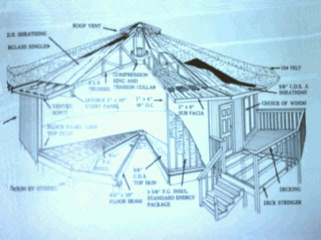
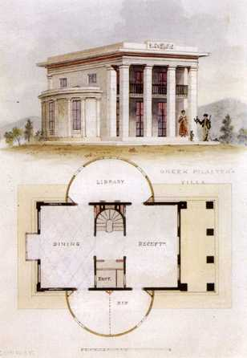

Photo Gallery
Photo Gallery
 Flow Charts
Flow Charts
 Announcements
Announcements
 Student Projects
Student Projects
 Club
Club
Degree Programs
Associate in Architectural Drafting Technology (Career & Transfer) (047)

A two-year specialized program for those individuals who desire to enter the architectural drafting job market at the completion of the program. This program can also be tailored for transfer to universities or colleges in the area of Construction Management.
Advisor: Garth J. Jensen
Associate in Carpentry & Building Construction (Career) (219)
 A two-year specialized program for those
individuals who desire to enter the construction industry upon graduation. Graduates with
this degree and field experience can expect to fill such construction positions as
carpenters, construction superintendents, general contractors and other positions in the
construction industry.
A two-year specialized program for those
individuals who desire to enter the construction industry upon graduation. Graduates with
this degree and field experience can expect to fill such construction positions as
carpenters, construction superintendents, general contractors and other positions in the
construction industry. Advisor: Rudy Puzey
Associate in Arts & Sciences with a major in Technology Education
(276)A program that prepares industrial/technology/vocational teachers for junior high/middle sch
 ool, high school, and post-high-school programs. Additional
education is required to prepare for teacher education in college or university. This is a
transfer program designed to complete all general education requirements for transfer to a
four-year university to complete a Bachelor of Science degree in Technology
Education.
ool, high school, and post-high-school programs. Additional
education is required to prepare for teacher education in college or university. This is a
transfer program designed to complete all general education requirements for transfer to a
four-year university to complete a Bachelor of Science degree in Technology
Education. Advisor: Rudy Puzey
Associate in Arts & Sciences with a major in Pre-Architecture (Transfer) (293)

A rigorous, college level, transfer oriented program. This transfer program is designed to meet many of the first two-year core requirements for an architectural curriculum. To accomplish this objective the student must consult his advisor to tailor the transfer curriculum to meet the core requirements of the students selected college of architecture. Advisor: William BarnhillAssociate
in Arts & Science with a major in Construction Management (Transfer) (303)
A transfer program that provides basic construction
classes and allows students to complete all of the General Education requirements for
transfer to a four-year university to complete a Bachelor of Science degree in
Construction Management. Advisor: Brian Blaylock